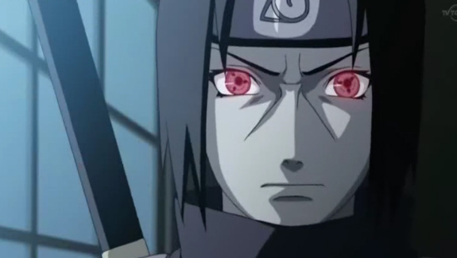
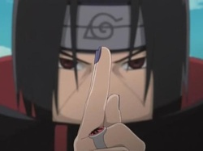

Itachiwas born into the Uchiha clan as the eldest son of Fugaku and Mikoto Uchiha, and was praised by all as the best of his generation, and a genius above all others. Even by the standards of the battle-adept Uchiha clan, Itachi's prowess far outshone their own. However, few could understand him. When he was only four, Itachi had already witnessed countless lives lost due to the Third Shinobi World War, which emotionally traumatised him and consequently turned him into a pacifist. Itachi spent much of his time researching the history of the village from the writings their ancestors left behind. During the Nine-Tails' attack on Konoha, Itachi was left alone to take care of his infant brother Sasuke and promised to protect him no matter what. In the anime, it was shown that during their childhood, Itachi made a game of collecting paw prints of cats with his brother. The last paw print to be collected was Nekomata's, who Itachi had defeated and asked him to fight Sasuke with all his might when Sasuke got older. Picture At age 7, Itachi graduated from the Academy at the top of his class after only one year, mastered the Sharingan at age 8, passed the Chūnin Exams at age 10, and enrolled in ANBU half a year later. Itachi was praised highly by Fugaku, his father, who spent most of his time grooming Itachi to inherit the title of leader of the Uchiha, and hence inadvertently neglected his younger son. However, Itachi showed great affection towards his little brother and even encouraged his father to come to the Academy enrollment ceremony for Sasuke, something their father had otherwise forgotten, caught up an important mission that would establish Itachi a place in the ANBU ranks. He later became a captain by age 13. At some point in time in their childhood, Sasuke helped Itachi on one of his missions to capture a giant boar. Itachi told Sasuke to avoid his vital points. He then threw kunai with explosive tags around the boar, to confuse it and to give Sasuke an opportunity to shoot the boar. Sasuke, however, missed completely. After Sasuke apologised, Itachi told him he needs to train more. Picture When the Uchiha clan began planning to overthrow Konoha, Itachi, as an ANBU, was tasked with spying on the village. Knowing that a coup d'état would only escalate to the beginning of another ninja-world war, Itachi began spying on the Uchiha instead, passing on information to the Third Hokage and Konoha elders. Though the Third Hokage ultimately decided to reason with the Uchiha in order to dissuade them from their actions,Danzō Shimura met secretly with Itachi Uchiha and inveigled him into choosing the lives of his clansmen or that of his little brother. Itachi eventually discovered the existence of Tobi — under the guise of a vengeful Madara Uchiha — who was attempting to rekindle the flames of war in Konoha. In return for not attacking Konoha, Itachi offered to help him claim vengeance against the Uchiha for turning their backs on him decades earlier to which Tobi agreed. During this time he began to act strangely, not attending the clan meetings, speaking out against the clan, and becoming the prime suspect for the murder of his best friend Shisui Uchiha, who was drowned in the Naka River. In reality, Shisui died after he entrusted his left eye to Itachi, the other having been taken by Danzō Shimura during Shisui's failed attempt to stop Danzō from carrying out his plan to commit genocide. Due to this the clan lost hope in Itachi, and his father began shifting his focus to Sasuke instead. Meanwhile, the Third's attempts to negotiate a bloodless end to hostilities between the two parties were proving ineffective, so against Hiruzen's wishes, Danzō Shimura and the Konoha Council ordered Itachi to wipe out the Uchiha clan.
Your not even worth killing...foolish
little brother. If you wish to kill me
one day, foster your hatred and
despise me. Surviving in such
an unsightly manor as this. By all means
flee...cling to your rugged life.
If you wish to defeat me one day, and
gain eyes like mine...Come back to
fight me!
Itachi soon afterwards discovered Tobi, under the guise of Madara Uchiha. With the older Uchiha's help, Itachi was taught about the Mangekyō Sharingan. On the fateful night Itachi slaughtered his entire clan, despite this action, his parents stated that they were still proud of their eldest son, and requested that he took care of Sasuke. As per the agreement between him and Danzō, Itachi spared Sasuke as he was oblivious to the Uchiha's revolt and Itachi's love for his brother was too great. He lied to his brother, making himself out as a villain who had killed their innocent family only to test his capacity, and told Sasuke he was not even worth killing. Itachi also revealed to Sasuke the secret meeting place of the Uchiha, where Sasuke can learn the true history and purpose of the Sharingan. Itachi told him that in order to awaken the Mangekyō Sharingan, Sasuke had to kill the person closest to him, and that when they met again, they should have the same eyes. Sasuke managed to stand back up, awaken his Sharingan, and pursue Itachi. Upon reaching Itachi, he managed to knock off his forehead protector. Itachi shed a tear as he was picking up his forehead protector, then proceeded to incapacitate Sasuke, who awoke in the hospital, only remembering up to Itachi's speech. Hoping that his little brother would someday be powerful enough to kill him, Itachi left the village as a traitor. Knowing that Konoha would still want to eliminate Sasuke, Itachi pleaded with the Third Hokage to keep Sasuke safe and threatened Danzō not to harm Sasuke or else he would reveal everything he knew about Konoha's secrets to enemy nations. Picture Still desiring to protect Konohagakure even after becoming a wanted criminal, Itachi joined Akatsuki to keep a watchful eye on the organisation. He was partnered with Kisame Hoshigaki, who initially tried to intimidate him. However, they eventually became good partners. During his time in Akatsuki,Orochimaru tried to steal his body to gain the Sharingan, but Itachi trapped him in a genjutsu and severed his left hand. Some time later, Itachi helped recruit Deidara by beating him in battle using only genjutsu, to which Deidara swore vengeance. Additionally at some point, Itachi contracted an illness. He kept himself alive by taking various medicines, along with sheer "willpower" so that he could live long enough until his fated battle with Sasuke.
Itachi's most identifiable techniques were those involving the use of crows. He was able to summon a large flock of them which he utilised in his ninjutsu and genjutsu. This is seen primarily with his creations of clones which dissolve into crows, and crows that would dissolve into shuriken for surprise attacks. He was also able to create shadow clones and from them create explosive clones. As an ANBU, Itachi was also able to pass through the Sensing System Technique barrier without setting it off. Itachi also had high skill with fūinjutsu as seen when he performed Transcription Seal: Amaterasu on Sasuke, just moments before his death. Itachi, while never seen using Kotoamatsukami himself, could program another Mangekyō Sharingan able to use it to active the effects under a specific situation and give a particular programming on the target. Traditional to the Uchiha clan, Itachi could use Fire Release techniques, including the clan's giant fireballs the intensity of which was enough to bother even Samehada, and he could combine his proficient weapon skills with his fire attacks. He was also proficient with Water Release, able to perform them without an already existing water source. Itachi could catch his opponents off guard with drilling masses of pressurised water, and large water dragons.
Itachi possessed the Mangekyō Sharingan, designed with three evenly spaced curves spiralling around the pupil, which enabled him to use his most powerful techniques. His proficiency allows him to use any of these techniques without activating this form. With his left eye, he could use Tsukuyomi, a genjutsu that trapped opponents' minds in an illusory world, torturing them for what felt like days in a matter of seconds. With his right eye he could use Amaterasu, which created controllable black flames that could burn anything, including fire itself. His final technique was Susanoo, the "Tempestuous God of Valour" (勇武の荒神,Yūbu no Aragami), a technique that used both eyes to create a spectral being. It wielded the Sword of Totsuka, an ethereal sword with the ability to seal any person it pierced into the gourd that served as its hilt, and the Yata Mirror, a shield that was said to reflect any attack. Zetsu remarked that both of these weapons essentially made Itachi's Susanoo invincible. With the Susanoo also came his most powerful long-ranged attack: the Yasaka Magatama. The defensive power of his Susanoo is great enough to protect him from the full effects of a technique as powerful as Kirin despite it being destroyed and needing to be reformed from the technique. He also demonstrated the ability to manifest different individual segments or the various stages of Susanoo and control them with and control them with great skill. During his battle against Kabuto Yakushi, he was also able to form a single arm of Susanoo to protect Sasuke despite the Sage Art: White Rage Technique interfering with his hearing, sight and equilibrium. Despite his mastery of the Mangekyō Sharingan, Itachi suffered greatly from its side effects. Each of the techniques bestowed by the Mangekyō Sharingan required vast amounts of chakra to perform, and left him fatigued afterwards, requiring him to deactivate his Sharingan altogether. From Part I, three uses of the Mangekyō seemed to bring him to this point. The other side effect was that his eyesight would gradually worsen since the awakening of the Mangekyō Sharingan, and the degradation would only quicken after every time he used it, which would lead him to eventually go blind, with his Sharingan forever sealed away. By the time Itachi activated his Mangekyō Sharingan during his final fight with Sasuke, Itachi's eyesight had deteriorated so much that Sasuke appeared to be a mere blur, his eyesight was so close to blindness that by the time he activated Susanoo, both Sharingan had lost the Mangekyō design, with only the red iris remaining. Due to his illness and low stamina, prolonged use of the Susanoo caused immense strain on his body, almost dispelling the technique altogether during his battle against Sasuke and ultimately causing him succumb to his illness. Upon his reincarnation in Summoning: Impure World Reincarnation, Itachi's disease was gone and his sight was fully restored, he became able to maintain Susanoo for long durations and use his two other known Mangekyō techniques without noticeable problems.
Forgive me, Sasuke... There won't be a next time.